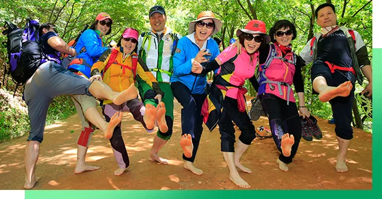
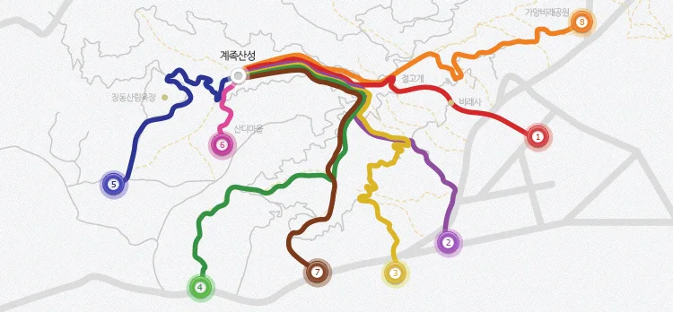
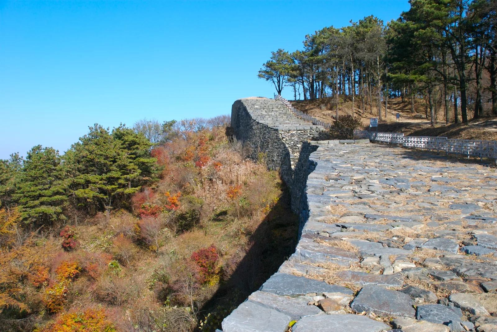
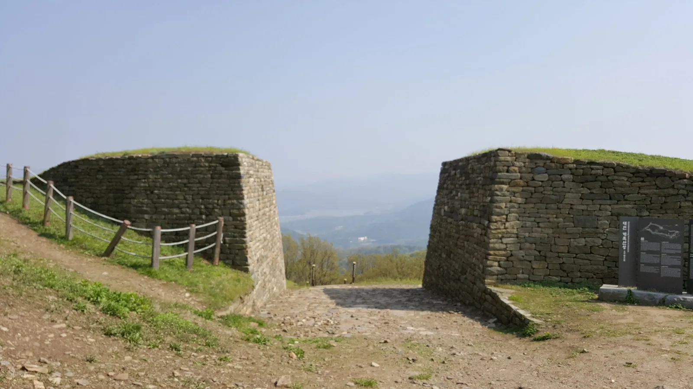
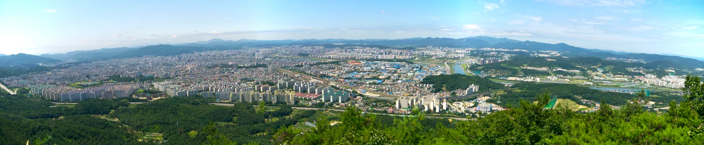

▲ 대전 계족산 황톳길을 맨발로 걷는 방문객. 황톳길은 부드러운 붉은 흙이 깔려 있어 신발을 벗고 걷는 이들이 많다
대전 대덕구 장동에 자리한 계족산(해발 429m)은 도심에서 가까우면서도 산 전체를 두르는 흙길을 맨발로 걸을 수 있어, 전국적인 '맨발걷기' 열풍의 발원지로 꼽힌다. 2006년 한 지역 기업인이 사비를 들여 황토를 깔기 시작한 이 길은 현재 총 14.5km에 이르는 전국 최대 규모의 맨발걷기 전용 보행로로 자리 잡았다. 완만한 경사와 잘 다져진 붉은 흙길이 특징으로, 초보자도 부담 없이 걸을 수 있다.
1. 14.5km 황톳길, 어떻게 시작됐나

▲ 맨발로 황톳길을 걷는 방문객들. 매년 5월에는 '계족산 맨발축제'가 열려 전국에서 참가자가 모인다 대전광역시 대덕구청
계족산 황톳길은 2006년 처음 조성된 이래 지속적으로 구간이 확장돼, 현재는 산 전체를 감싸는 순환형 코스로 완성됐다. 길 곳곳에는 흙 묻은 발을 씻을 수 있는 세족장과 정자, 쉼터가 설치돼 있어 남녀노소 부담 없이 이용할 수 있다. 신발을 신은 채 걸을 수 있는 일반 둘레길 구간과 맨발 전용 구간이 함께 조성돼 있어, 체력과 취향에 맞춰 코스를 고를 수 있다.
2. 코스 안내 — 8개 세부 구간으로 순환

▲ 계족산 황톳길 순환 코스 안내도. 계족산성을 기점으로 8개 세부 코스가 색깔별로 표시돼 있다 대전광역시 대덕구청
황톳길은 계족산성을 중심으로 8개의 세부 코스로 나뉘어 있으며, 전체를 완주하면 3시간 이상 걸리는 장거리 코스다. 짧게 맨발 체험만 하고 싶다면 접근이 쉬운 구간 한두 곳만 골라 왕복하는 것도 가능하다. 초행이라면 대덕구청 공식 안내도를 미리 확인해 자신의 체력에 맞는 구간을 정하고 출발하는 편이 좋다.
대덕구청 공식 홈페이지에서 계족산 황톳길 코스 확인 가능3. 계족산성 전망대 — 대청호와 대전 시내 조망

▲ 삼국시대 축조된 것으로 추정되는 계족산성 성벽. 가을철에는 성벽을 따라 단풍이 함께 물든다 ⓒ Wikimedia Commons (Yoo Chung)
황톳길 중간 지점에서 약 20분 정도 오르면 해발 420m 안팎의 계족산성에 닿는다. 삼국시대 축조된 것으로 추정되는 이 산성 터는 대청호와 대전 시내를 한눈에 담을 수 있는 대표적인 전망 포인트다. 봄철에는 벚꽃 군락지, 가을철에는 주변 산세의 단풍이 어우러져 계절마다 다른 풍경을 볼 수 있다.

▲ 계족산성 성문 터에서 바라본 조망. 맑은 날에는 성문 사이로 대전 시내와 먼 산줄기까지 시야가 트인다 ⓒ Wikimedia Commons (Ryuch)

▲ 계족산 봉황정에서 내려다본 대전 시내 파노라마. 황톳길을 걷다 오른 전망대에서는 이처럼 도심 전체가 한눈에 들어온다 ⓒ Wikimedia Commons (YooChung)
| 항목 | 내용 |
|---|---|
| 위치 | 대전광역시 대덕구 장동 453-1 |
| 조성 | 2006년, 총 14.5km 순환형 맨발걷기 전용 보행로 |
| 이용시간·요금 | 제한 없음(연중 개방), 무료 |
| 전망대 | 계족산성(해발 약 420m), 대청호·대전 시내 조망 |
| 편의시설 | 세족장, 정자, 놀이터 다수 배치 |
| 문의 | 042-623-9909 |
4. 가을 단풍과 주말 프로그램
매년 5월 열리는 '계족산 맨발축제' 외에도, 4~10월에는 매 주말 계족산 숲속음악회장에서 다채로운 공연과 프로그램이 진행된다. 가을철에는 참나무·단풍나무가 우거진 산길이 붉게 물들어 맨발 감촉과 함께 단풍을 즐기는 방문객들이 많다. 이른 아침이나 늦은 오후에는 그늘이 길게 드리워 한여름에도 비교적 걷기 편한 편이다.
5. 계족산 황톳길, 가기 전 체크리스트
✅ 계족산 황톳길, 가기 전 체크리스트
· 대전 대덕구 장동, 2006년 조성된 전국 최대(14.5km) 맨발걷기 전용 보행로
· 계족산성을 중심으로 8개 세부 코스가 순환형으로 연결, 완주 3시간 이상
· 세족장·정자·놀이터 등 편의시설 다수, 이용시간 제한 없이 무료 개방
· 계족산성 전망대(해발 약 420m)에서 대청호·대전 시내 조망 가능
· 매년 5월 '계족산 맨발축제', 4~10월 매 주말 숲속음악회 진행
· 가을철 단풍과 맨발 감촉을 함께 즐기려면 이른 아침·늦은 오후 추천